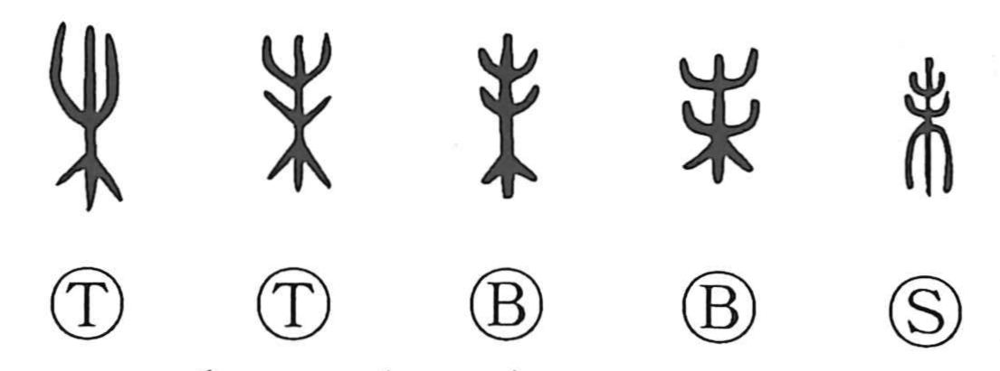

未

Kun: imada, mada | On: mi
not yet ・ still ・ eighth earthly branch ・ sheep (zodiac)
Explanation
The ancient graph sketches a tree with branch tips thrusting out luxuriantly. From this image come derivatives: with the knife element it forms 制, the pruning or trimming of those outgrowing branches, and with the clothing element it forms 製, cutting cloth and tailoring. The familiar sense “not yet” (imada, often with a negative) is a later phonetic loan based on the character’s sound. The graph also serves as the name of the eighth Earthly Branch, traditionally associated with the sheep.